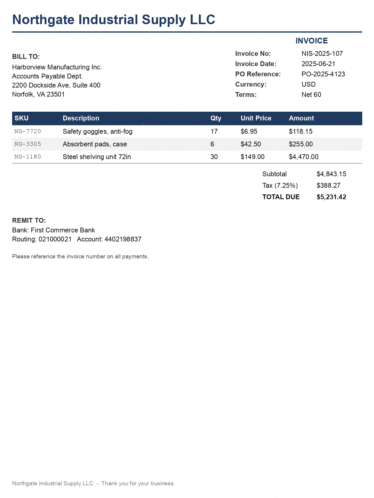

Agents that close the books.
Humans that sign them.
Agentic three-way invoice matching · 81.3% → 100%, measured on 64 gold-labeled cases
Invoice ↔ purchase order ↔ goods receipt — plus duplicate, tax and bank-account screening — before anything is paid.

Same model, same written AP policy, same 32 gold-labeled invoices as the final system. OCR text + full ERP dump + policy → one decision.
Tax $388.27 ≠ tax_rate 0.0725 × subtotal $4,843.15 = $351.13 (tolerance $0.02)
verifier ⇄ matcher: agree · checks passed: PO ✓ prices ✓ quantities ✓ bank ✓ duplicates ✓
The single-prompt baseline approved this invoice — a $37.14 overpayment, silently.
Every number traces to a committed results file in eval/results/ · full trajectories for every run in trajectories/
Every measured gain came from taking a responsibility away from the model. Ablation: extraction + a deterministic engine alone → 100% at ⅕ the cost. Spend the LLM only where the world is unstructured.
Synthetic data only · sandboxed payments · human sign-off on every action